Jukebox IA
Résultat final :
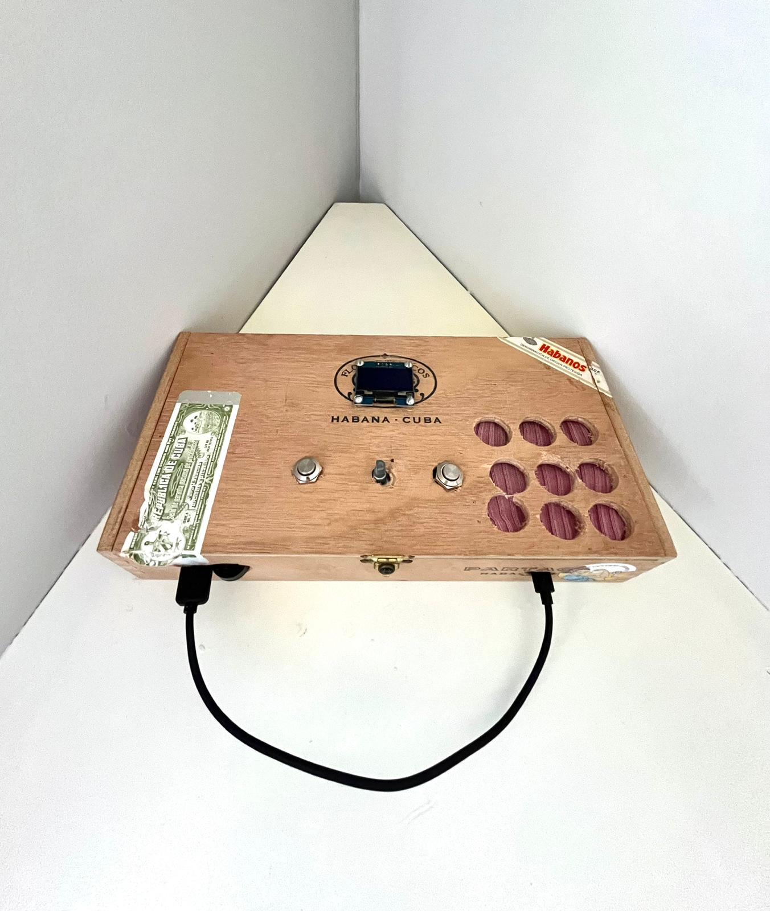
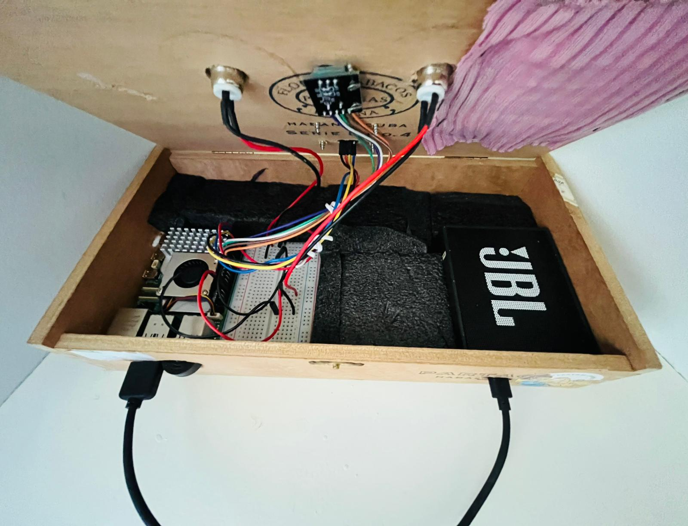
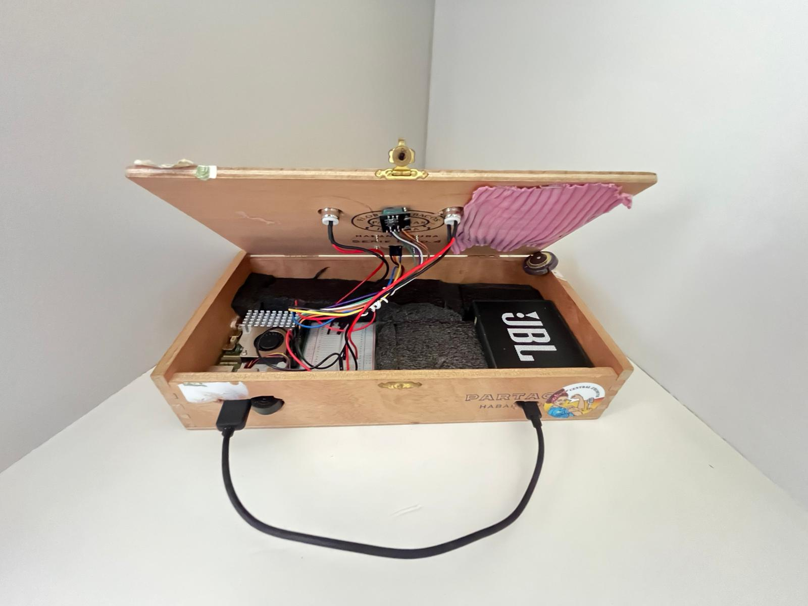
Pourquoi cette invention ? J'en avais marre de déverrouiller mon téléphone, ouvrir Spotify, chercher une chanson, tout ça juste pour changer de musique. Alors j'ai construit un truc où je dis juste "joue du Travis Scott" et ça le fait. Avec un Raspberry Pi 5 et une vieille boîte à cigares.
On pourrait se demander s'il ne valait pas mieux acheter une Alexa, mais à une époque où la confidentialité des données n'est plus garantie, cela pousse à réfléchir à deux fois.
Ce projet a démarré avec la réception de quelques composants pour expérimenter avec mon Raspberry Pi 5 :
- 1x Pack de câbles Jumper Femelle-Femelle (F-F) (40 pcs ruban)
- 1x Pack de câbles Jumper Femelle-Mâle (F-M) (40 pcs ruban)
- Écran OLED 1.3"
- 2x Amplificateurs I2S MAX98357A : pour transformer le signal numérique en analogique pour les haut-parleurs
- Module encodeur rotatif 5 broches (pour le volume)
- Beaucoup de boutons poussoirs
- 2x Haut-parleurs 3W
- Breadboard medium
- Micro USB pas cher
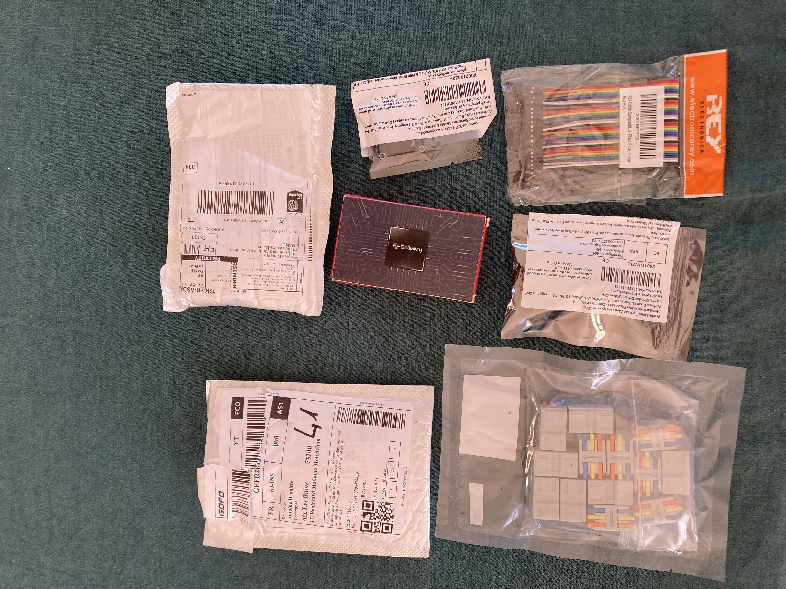
La première difficulté est apparue lors du branchement de tous ces composants pendant le prototypage. L'encodeur rotatif et l'écran OLED ne m'ont posé aucun problème — il suffisait de les connecter aux bons pins GPIO du Pi. (L'écran a l'air bizarre car je n'utilisais pas encore Luma)
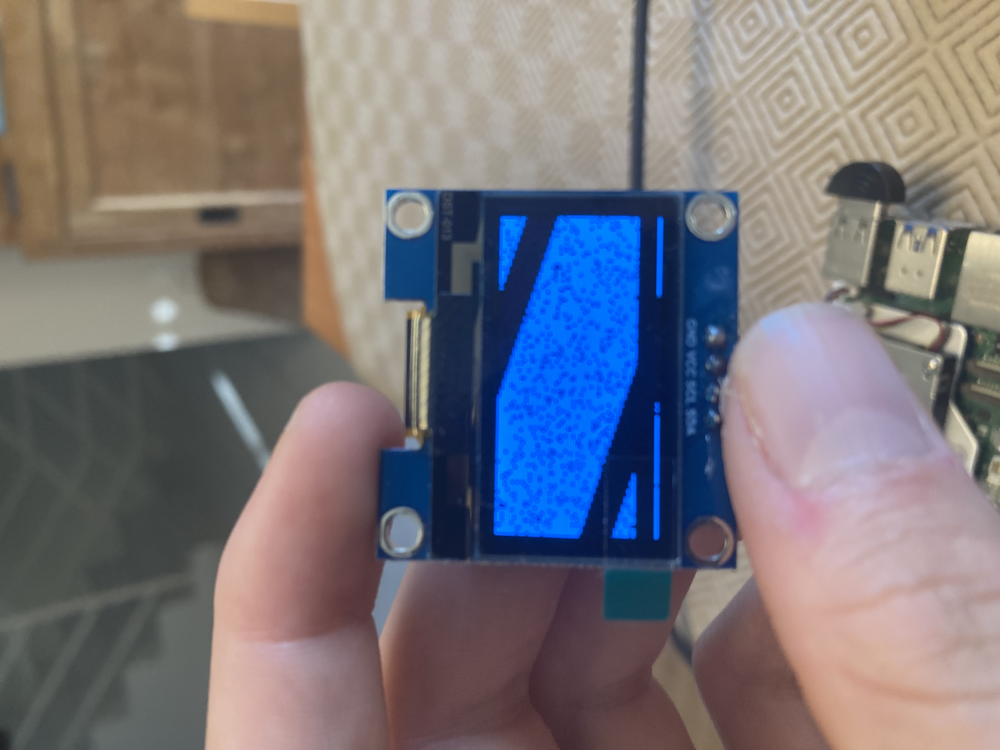
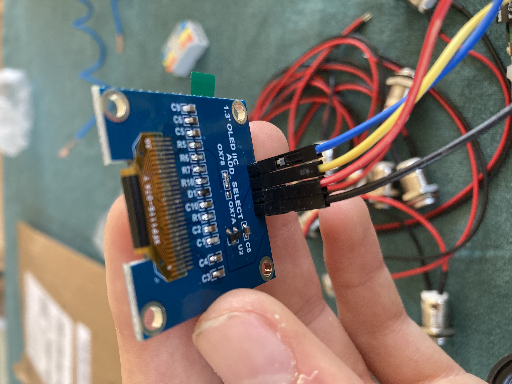
La soudure, en revanche, s'est moins bien passée — c'était la première fois que je soudais des composants électroniques, et le résultat n'était pas beau.
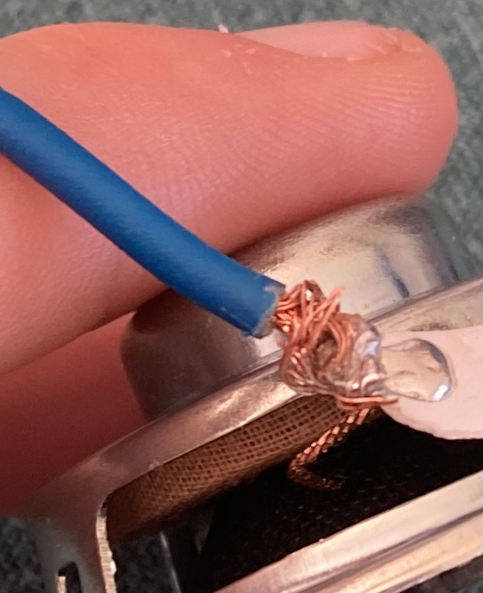
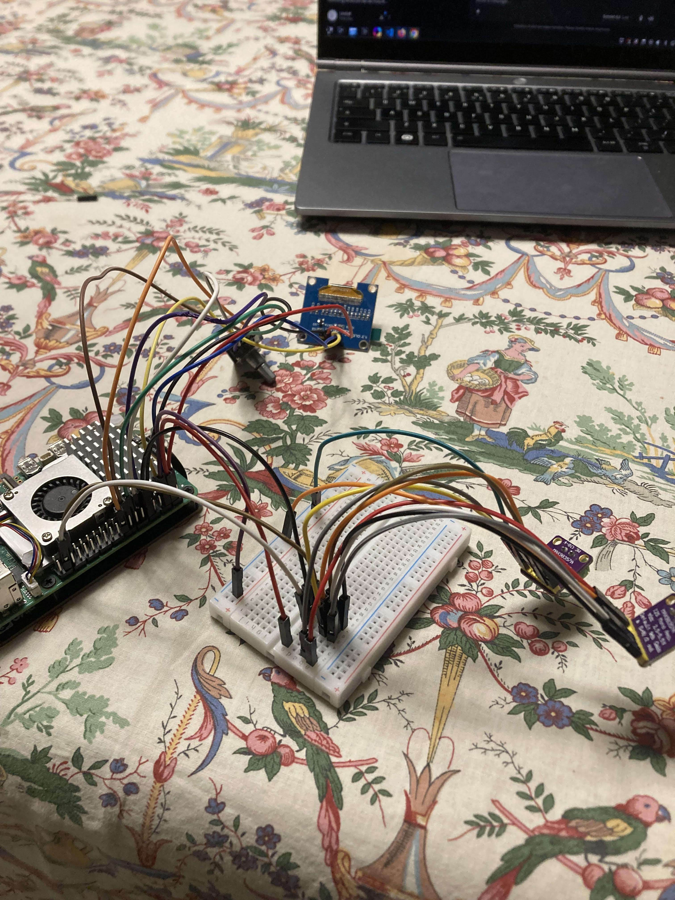
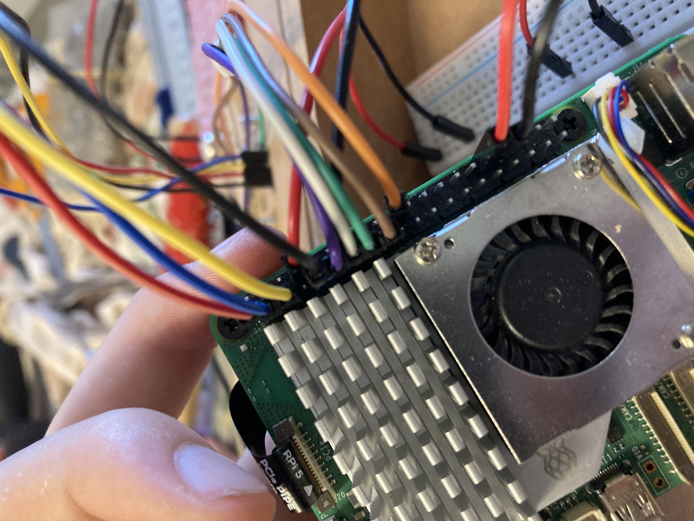
En fait, les haut-parleurs ne fonctionnaient pas, car la connexion avec l'ampli était trop mauvaise. J'ai donc décidé de connecter le RPi5 en Bluetooth à un petit haut-parleur JBL.
J'ai écrit un script Python pour afficher des éléments sur l'écran OLED avec Luma, mais l'affichage était mal calibré, j'ai donc dû écrire un autre script pour afficher chaque frame correctement.
Les animations ont été conçues avec Piskel.
Pipeline de l'agent IA :
Tout ce qui suit est le fruit du "vibe-coding" (codage à l'aide de LLMs), et de longues heures à déboguer le code généré par l'IA.
J'appuie sur un des boutons poussoirs, je parle dans le micro USB, et je relâche quand j'ai fini.
Ma voix enregistrée est ensuite transformée en texte par faster-whisper 0.3.0, une réimplémentation du modèle Whisper d'OpenAI utilisant CTranslate2, un moteur d'inférence rapide pour les modèles Transformer.
Le prompt est ensuite envoyé à Qwen3-0.6B via Ollama.
Enfin, la réponse de l'IA est convertie en voix par Piper TTS et diffusée via le haut-parleur JBL (Bluetooth).
Note : Pourquoi Qwen3-0.6B ? En raison des limitations du CPU du RPi5, j'ai dû privilégier la vitesse sur la qualité. L'agent IA, du début à la fin, répond en moins de 3 secondes avec ce modèle — même si les réponses laissent parfois à désirer. Avec des modèles plus puissants, l'agent peut mettre jusqu'à 10 secondes, ce qui détruit l'objectif d'avoir une conversation naturelle.
L'étape suivante était d'assembler tout ça de manière plus compacte et moins prototype.
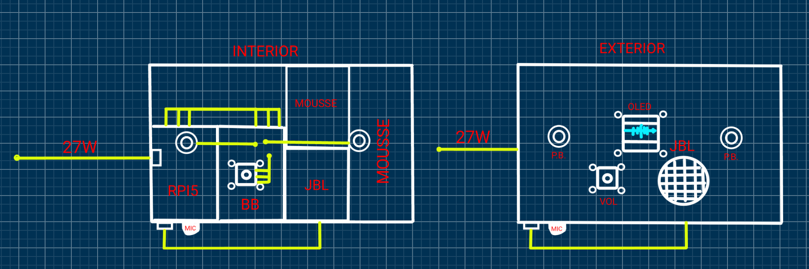
J'ai passé un après-midi à percer des trous dans une vieille boîte à cigares et à essayer de trouver comment placer chaque élément correctement, en faisant beaucoup d'erreurs au passage.
Voilà le résultat :
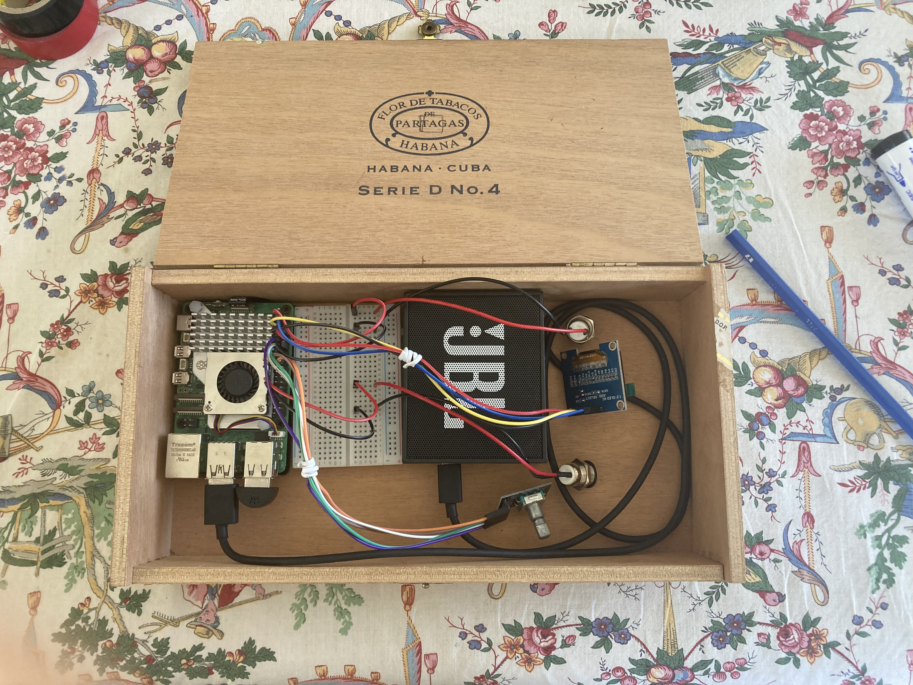

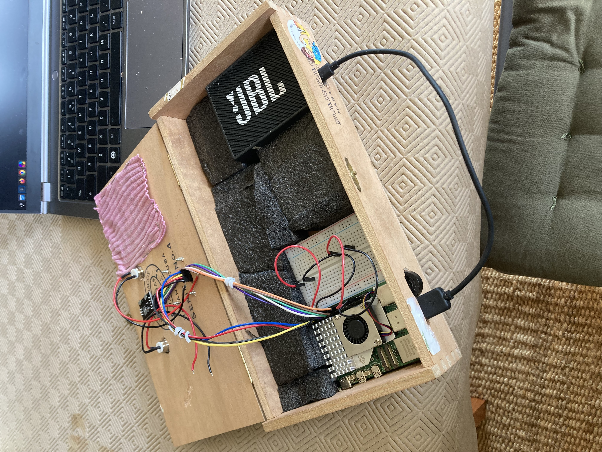
Phase finale : donner accès à Spotify à l'agent via Librespot.
Ma photo de profil :
- Classe : 3ème au Collège Lamartine (Aix-les-Bains, Savoie)
- Passions : ski, bricolage, dessin
- Métier rêvé : Ingénieur nucléaire
- Âge : 15 ans